human_label is always null unless a real human intervention is recorded. Auto-evaluation uses the P03 benchmark rubric, not human ground truth.
| Scene | Narration | Route / asset | Source / licence | P03 scores | P04 auto-eval | human_label | Still |
|---|---|---|---|---|---|---|---|
| s0777-b12 ALL_BAD · history |
Pensemos, por ejemplo, en la ciudad de Palmira, en el desierto sirio. Durante siglos, sus columnas y templos contaron la historia de un cruce de rutas comerciales donde se encontraban Oriente y Occidente. Pero en 2015, cuando el conflicto armado arrasó la región, el mundo observó impotente cómo monumentos que habían sobrevivido a dos milenios de tormentas, invasiones y terremotos eran reducidos a escombros en cuestión de días. Las imágenes de aquellos arcos derrumbados no solo documentaron la pérdida de un patrimonio, sino que se convirtieron en un símbolo de cómo la barbarie puede ser más rápida que el tiempo. Y sin embargo, incluso en ese paisaje de destrucción, los arqueólogos han encontrado fragmentos que aún hablan: inscripciones, relieves, piedras que quizás algún día vuelvan a ser parte de un templo o de una calle. | HISTORYARCHIVAL_IMAGE fallback=literal score=0.309731 |
wikimedia_commons CC BY 2.0 James Gordon from Los Angeles, California, USA |
{'legacy': 0.3, 'semantic_text': 0.3, 'semantic_visual': 0.3} | 0.85 The image clearly depicts the Palmyra ruins in a desert setting, with some collapsed structures visible. |
null | 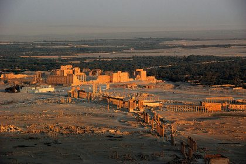 |
| s1406-b11 ALL_BAD · medical |
En la siguiente parte, exploraremos cómo se diagnostica el carcinoma de células escamosas: los síntomas iniciales, las pruebas que confirman la enfermedad y las decisiones que marcan la diferencia. Porque entender al paciente es solo el primer paso; el segundo es afinar la precisión clínica. ¿Conocías el impacto emocional y físico que esconde este diagnóstico? Te leo en los comentarios. | MEDICALSTOCK_VIDEO fallback=literal score=0.281118 |
pixabay UNKNOWN |
{'legacy': 0.0, 'semantic_text': 0.0, 'semantic_visual': 0.0} | 0.0 The image depicts an eye examination, not a doctor reviewing clinical records. |
null | 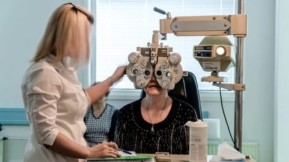 |
| s0114-b17 ALL_BAD · nature |
Días después de la tormenta que arrasó el USS Monitor, la incertidumbre se cernía como una sombra sobre el océano. El navío, una obra maestra de la ingeniería bélica, había sucumbido a la furia de las olas, llevándose consigo a hombres y esperanzas. Los sobrevivientes, que habían logrado aferrarse a los fragmentos de su onceava vida, enfrentaban ahora la desgarradora realidad de la pérdida. La superficie del agua, antes un manto de peligro y aventura, se había convertido en un cementerio helado donde la memoria de sus compañeros caídos se unía al vaivén de las corrientes. En cada amanecer, el dolor de los que se habían ido resonaba en los corazones de aquellos que aún luchaban por un futuro incierto. | NATURESTOCK_IMAGE fallback=literal score=0.202063 |
pixabay_photo UNKNOWN |
{'legacy': 0.3, 'semantic_text': None, 'semantic_visual': 0.3} | 0.3 The image depicts a sunrise over the ocean but lacks any representation of survivors or grieving. |
null | |
| s0223-b48 ALL_BAD · other |
Carl Jung documentó en 'Recuerdos, sueños, pensamientos' que las series de sueños revelan patrones del inconsciente que ningún sueño aislado puede mostrar. La secuencia es más sabia. | ABSTRACTSTOCK_IMAGE fallback=literal score=0.279538 |
pixabay_photo UNKNOWN |
{'legacy': 0.0, 'semantic_text': 0.0, 'semantic_visual': 0.0} | 0.3 The image features books but does not show a Carl Jung book or visible text. |
null | |
| s0526-b18 ALL_BAD · people |
Pronto notó que su entorno también se alteraba. Las coincidencias imposibles ya no eran amenazas, sino señales de un camino que él mismo trazaba. Al aplicar el concepto de 'trabajar su propia salvación', experimentó un cambio de realidad: ya no era víctima de fuerzas oscuras, sino un cocreador consciente. La luz que antes buscaba afuera ahora irradiaba desde su centro. | ABSTRACTSTOCK_VIDEO fallback=literal score=0.325492 |
pixabay UNKNOWN |
{'legacy': 0.3, 'semantic_text': 0.3, 'semantic_visual': 0.3} | 0.3 The image lacks a human silhouette and action, but has a dark environment. |
null | |
| s1629-b21 ALL_BAD · action |
Hoy, los restos de ambos navíos descansan en el Ártico como un monumento involuntario a la arrogancia y a la resistencia. En el Erebus, los buzos encontraron el mecanismo del timón aún engrasado, y en el Terror, un plato de porcelana con el escudo de la Marina Real. Pero el legado más profundo no está en los objetos: está en lo que los inuit ya sabían y los europeos no quisieron escuchar. La expedición Franklin demostró que la tecnología más avanzada de su tiempo —motores de vapor, conservas herméticas, bibliotecas de mil libros— no podía competir con el conocimiento de quienes vivían en el hielo desde hacía generaciones. Cuando los barcos se hundieron, los hombres que sobrevivieron murieron caminando hacia un horizonte que no conocían. La pregunta que queda flotando es incómoda: si hubieran confiado en los netsilik desde el principio, si hubieran aceptado que el Ártico no se conquista sino que se habita, ¿cuántos de esos 129 hombres habrían vuelto a casa? El Erebus y el Terror ya no son naufragios. Son la prueba de que el respeto al entorno y a quienes lo conocen puede ser la diferencia entre la vida y la muerte. | ABSTRACTSTOCK_IMAGE fallback=literal score=0.257571 |
pixabay_photo UNKNOWN |
{'legacy': 0.3, 'semantic_text': None, 'semantic_visual': 0.3} | 0.3 The image depicts a desolate Arctic landscape but lacks the specific subject and action. |
null | |
| s0714-b09 ALL_BAD · animals |
Y en esa comprensión yace el secreto que Thoth ordenó esconder en las cavernas, esperando el fin de la guerra de los ciclos. Los dogones, ese pueblo de África occidental que los antropólogos llaman hijos de Enki, guardaron durante milenios la memoria de aquellos seres que bajaron del cielo, los que en Sumeria fueron conocidos como los Apkallu, los hombres-pájaro que trajeron la sabiduría de las estrellas. No eran dioses en el sentido que nosotros entendemos, sino portadores de una ciencia que trascendía lo que podía escribirse en tablillas de arcilla. Eran viajeros de la luz, como los llamaban los textos, y su vehículo no era una nave de metal, sino un campo de energía que los antiguos denominaron MerKaBa, la luz que transporta el espíritu a través de los mundos. Cuando contemplamos las estatuas de esos seres alados, cubiertos de escamas como peces o vestidos con túnicas de pájaro, no estamos viendo mitos inocentes, sino la memoria petrificada de un contacto que ocurrió antes de que la historia comenzara, y que fue borrado de la memoria colectiva para que no cayera en manos de quienes buscaban dominar, no comprender. | ABSTRACTSTOCK_IMAGE fallback=literal score=0.178745 |
pixabay_photo UNKNOWN |
{'legacy': 0.3, 'semantic_text': None, 'semantic_visual': 0.3} | 0.3 The image depicts ancient ruins but lacks the specific subject and action requested. |
null | |
| s0795-b11 ALL_BAD · city |
Así, las piedras ciervo de Mongolia y los palacios de Creta nos enseñan que la grandeza humana es frágil, que las civilizaciones pueden erigir monumentos y luego desvanecerse bajo el polvo y las cenizas. Pero el colapso minoico no fue el último gran misterio de la antigüedad. Mientras el Mediterráneo se recuperaba de aquel desastre, en el otro lado del mundo, en las selvas de Mesoamérica, otra civilización construía ciudades tan majestuosas que también desaparecerían sin dejar una explicación clara. Ese es el enigma que nos espera: el colapso de los mayas, el misterio de las ciudades abandonadas. | CITYARCHIVAL_IMAGE fallback=literal score=0.292689 |
wikimedia_commons CC BY 3.0 Valentina Tosi |
{'legacy': 0.0, 'semantic_text': 0.0, 'semantic_visual': 0.3} | 0.0 The image shows a road sign and does not depict an abandoned Mayan city or any relevant action. |
null | 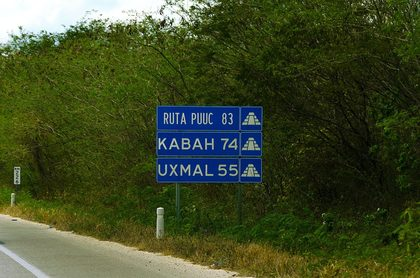 |
| s0377-b02 ALL_BAD · desert_geology |
Pero hay un detalle inquietante: no sabemos de dónde proviene este pectoral. Su origen es desconocido, perdido en el polvo del desierto o en el saqueo de alguna tumba olvidada. ¿Fue hallado en la necrópolis de Tebas, entre los restos de los sirvientes del faraón? ¿O acaso perteneció a un alto funcionario de la Dinastía XX, una época de declive y corrupción? Lo cierto es que, a pesar de su pequeño tamaño, este objeto nos habla de una obsesión humana que trasciende el tiempo: el deseo de vencer a la muerte. Mientras exista un pectoral como este, la voz de Pa-nehesi seguirá resonando, recordándonos que, para los egipcios, la vida era solo el primer capítulo de una historia infinita. | HISTORYARCHIVAL_IMAGE fallback=literal score=0.339646 |
wikimedia_commons CC0 Egypt Tour Magic |
{'legacy': 0.0, 'semantic_text': 0.3, 'semantic_visual': 0.3} | 0.3 The image shows a desert setting but lacks the specific subject of open tombs and the action of revealing looted tombs. |
null | 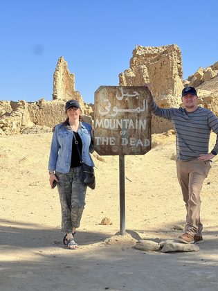 |
| s1356-b04 ALL_BAD · history |
Entre esos voluntarios destacaron Sayyid Tahir al-Jilani y su sobrino Hasan, quienes llegaron a Al-Qusayr el 1 de enero de 1799. Cuando la flota procedente de Jeddah arribó, se topó con una pequeña escuadra francesa que Napoleón había enviado a ocupar el puerto. Lejos de amedrentarse, los hiyazíes atacaron con tal ímpetu que la flota francesa, golpeada severamente, huyó de regreso a Suez. Aquel combate no fue un simple escaramuza: demostró que la resistencia podía golpear al invasor en su propio terreno logístico. Tras la victoria, los muyahidines avanzaron hacia la gobernación de Qena y se unieron al ejército de Murad Bey, el líder mameluco que aún resistía en el Alto Egipto. | HISTORYSTOCK_VIDEO fallback=literal score=0.19151 |
pixabay UNKNOWN |
{'legacy': 0.3, 'semantic_text': None, 'semantic_visual': 0.3} | 0.0 The image depicts ships but lacks specific elements related to the Hiyaz volunteers and the action of attacking. |
null | |
| s0869-b09 ALL_BAD · medical |
Mientras las luces del quirófano se encendían, Rita cerró los ojos, enfocándose en ese pequeño destello de esperanza que había encontrado en lo más profundo de sí misma. La lucha por su vida era inminente, y aunque la incertidumbre se adueñaba de su mente, el desafío que enfrentaba era también una oportunidad para renacer. La cirugía se convertiría en el umbral hacia una nueva etapa, un espacio donde la posibilidad de volver a caminar, de recuperar su independencia, se tejía poco a poco. Pero en su corazón, la pregunta persistía: ¿sería suficiente su fuerza para superar lo que estaba por venir? La respuesta aún se encontraba en el velo incierto del futuro. | MEDICALSTOCK_VIDEO fallback=literal score=0.205424 |
pexels UNKNOWN |
{'legacy': 0.3, 'semantic_text': None, 'semantic_visual': 0.3} | 0.3 The image depicts a surgical environment but lacks the specific subject and action described. |
null | 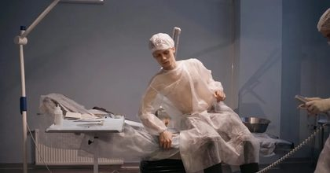 |
| s1212-b08 ALL_BAD · nature |
Pero CNGB3 no es el único gen implicado. Las mutaciones en CNGA3, otro componente esencial de los canales iónicos de los conos, también pueden causar acromatopsia. En este caso, la disfunción del canal afecta directamente la señalización visual: los iones no fluyen adecuadamente, y la cascada de fototransducción se ve alterada. A diferencia de CNGB3, donde la proteína truncada no alcanza su destino, en CNGA3 las mutaciones pueden alterar la estructura del canal de manera que este se vuelva inoperante o pierda su capacidad de respuesta. Ambos genes trabajan en conjunto para formar un canal heteromérico, y una falla en cualquiera de ellos rompe el delicado equilibrio necesario para la visión en color. La genética molecular ha revelado que la acromatopsia es una enfermedad genéticamente heterogénea, con múltiples genes y variantes que convergen en un mismo fenotipo: un mundo en escala de grises. | HISTORYSTOCK_IMAGE fallback=literal score=0.134721 |
pixabay_photo UNKNOWN |
{'legacy': 0.0, 'semantic_text': None, 'semantic_visual': 0.0} | 0.0 The image depicts a modern architectural structure, unrelated to the requested molecular visualization. |
null | |
| s0434-b07 ALL_BAD · other |
Pero hay más: los investigadores descubrieron que en los mutantes carentes de PsbZ, dos proteínas esenciales del complejo antenna, CP26 y CP29, disminuyen drásticamente. Son como los paneles solares de la célula, los encargados de capturar la luz y canalizarla hacia el centro de reacción. Sin ellas, el sistema de captación se desmorona. Ycf9 no solo une estructuras; es el arquitecto que asegura que los colectores de luz estén en su lugar. | ABSTRACTSTOCK_VIDEO fallback=literal score=0.17902 |
pexels UNKNOWN |
{'legacy': 0.0, 'semantic_text': None, 'semantic_visual': 0.0} | 0.0 The image does not depict an antenna protein complex or any relevant biological structures. |
null | 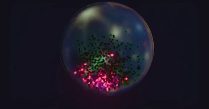 |
| s0173-b13 ALL_BAD · people |
Esta investigación sugiere que, al controlar sus sueños, los individuos pueden reescribir narrativas de miedo, enfrentándose a situaciones que normalmente evitarían en la vida cotidiana. | ABSTRACTSTOCK_VIDEO fallback=literal score=0.265112 |
pixabay UNKNOWN |
{'legacy': 0.3, 'semantic_text': 0.3, 'semantic_visual': 0.3} | 0.3 The image depicts a snowy landscape but lacks a person or any action related to transforming fear. |
null | 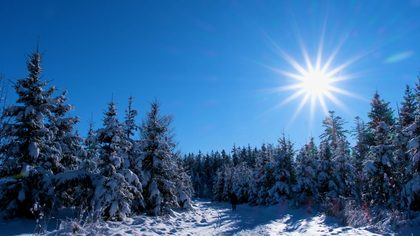 |
| s0080-b02 ALL_BAD · space_science |
A medida que ascendía, vislumbró la presencia de seres desconocidos, figuras etéreas que, aunque eran ajenas a su corta vida, le ofrecieron una calidez reconfortante. En este espacio, donde se entrelazaban luces y sombras, sentía como si dos corrientes de humo se fusionaran en su ser. La experiencia era casi onírica, envuelta en una niebla suave y envolvente, un campo que desdibujaba la línea entre su esencia física y algo mucho más grande. Era un estado de pureza, donde el miedo, esa emoción tan humana, se desvanecía por completo, dejando lugar a una conexión profunda con el universo. | ABSTRACTSTOCK_IMAGE fallback=literal score=0.248859 |
pixabay_photo UNKNOWN |
{'legacy': 0.3, 'semantic_text': 0.3, 'semantic_visual': 0.3} | 0.85 The image features ethereal figures in a misty environment with warm light, aligning well with the requested visual intent. |
null | |
| s0184-b13 ALL_BAD · technology |
La creciente popularidad de la parapsicología en el siglo XXI ha impulsado nuevas investigaciones sobre fenómenos como los que vivió el narrador. Cada estudio busca arrojar luz sobre lo que escapa a nuestra comprensión. | HISTORYSTOCK_VIDEO fallback=literal score=0.190248 |
pexels UNKNOWN |
{'legacy': 0.3, 'semantic_text': None, 'semantic_visual': 0.3} | 0.6 The image shows scientists in a laboratory setting, but it lacks specific elements of a parapsychology lab. |
null | |
| s1365-b02 ALL_BAD · action |
La grandeza de los artefactos de Mound 25 trasciende su tamaño físico; se convierten en símbolos de una sociedad que priorizaba el estatus y la espiritualidad. A medida que los arqueólogos han explorado el sitio, han encontrado que en las aldeas cercanas se forjaban herramientas más pequeñas a partir de cobre local, destinadas a usos cotidianos. Pero aquí, en las tumulaciones, los objetos adquirían un significado distinto, elevado al rango de símbolos de poder y prestigio. El estudio de estas dinámicas económicas por Tom Emerson y Ken Farnsworth revela dos mundos coexistentes dentro de una misma cultura: uno práctico y otro ceremonial, donde el valor de estos elementos radicaba en su capacidad de impresionar y comunicar estatus. | GENERICGENERIC_FALLBACK fallback=GENERIC score=0.0 |
pixabay_photo UNKNOWN |
{'legacy': 0.3, 'semantic_text': None, 'semantic_visual': 0.0} | 0.0 The image depicts classical sculptures, which do not relate to Hopewell artifacts or the archaeological site of Mound 25. |
null | |
| s1468-b12 ALL_BAD · animals |
Los restos hallados en la isla King William y en la isla Beechey cuentan lo que ningún diario pudo contar. Los arqueólogos han encontrado huesos humanos con marcas de corte limpias, del tipo que deja un cuchillo al retirar la carne de un hueso, y cráneos fracturados por golpes. No son marcas de animales: son marcas de manos humanas. La evidencia indica que algunos de los últimos supervivientes recurrieron al canibalismo para seguir un día más. En 1851, el explorador John Rae encontró objetos de la expedición en manos de familias inuit del Ártico central, y ellos le dijeron lo que habían visto: hombres que caminaban encorvados, con las encías sangrantes por el escorbuto, que caían y no se levantaban. Los últimos, según los relatos inuit recogidos por Rae, murieron de hambre y de enfermedad, no de una sola tragedia, sino de una suma de ellas. | HISTORYSTOCK_IMAGE fallback=literal score=0.208481 |
pixabay_photo UNKNOWN |
{'legacy': 0.3, 'semantic_text': None, 'semantic_visual': 0.3} | 0.3 The image depicts a frozen landscape but lacks the excavator and human bones. |
null | |
| s1698-b06 ALL_BAD · desert_geology |
La arqueóloga alemana Maria Reiche dedicó más de 50 años de su vida a barrer, medir y proteger estas líneas, y en 1949 publicó su hipótesis de que funcionaban como un calendario astronómico. La idea se repitió durante décadas en libros y documentales. Sin embargo, investigaciones posteriores no han confirmado esa función: muchos de los trazos no se alinean con eventos celestes relevantes, y el hallazgo de 2020 refuerza otra lectura. Los registros indican que las figuras nuevas, más pequeñas y cercanas a senderos, podrían haber sido marcadores de rutas rituales o señales para peregrinos que caminaban entre ellas, no para dioses que las miraban desde arriba. | HISTORYSTOCK_IMAGE fallback=literal score=0.255673 |
pixabay_photo UNKNOWN |
{'legacy': 0.0, 'semantic_text': 0.3, 'semantic_visual': 0.3} | 0.0 The image does not depict the requested subject, action, or environment. |
null | |
| s1161-b08 ALL_BAD · history |
Leopold Brandeis, un analista de aguas, examinó una muestra y propuso una teoría sorprendente: que no era carne, sino Nostoc, una cianobacteria gelatinosa que, al secarse, adquiere una consistencia similar a la del cartílago. Pero había un problema: para que el Nostoc se forme, se necesita humedad, y ese día no había llovido. ¿Cómo podía haber caído del cielo una sustancia que requiere agua para desarrollarse? La explicación parecía más extraña que el propio fenómeno. | HISTORYARCHIVAL_IMAGE fallback=literal score=0.259023 |
wikimedia_commons No restrictions Smithsonian Institution from United States |
{'legacy': 0.0, 'semantic_text': None, 'semantic_visual': 0.3} | 0.0 The image does not depict a scientist examining a sample in a laboratory setting. |
null | 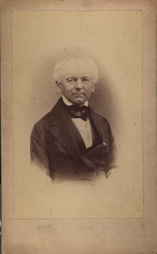 |
| s1299-b15 ALL_BAD · medical |
Y aquí es donde el misterio se vuelve más denso. Muchos de estos pacientes con lesiones cerebrales reciben primero un diagnóstico de esclerosis múltiple, porque las imágenes se parecen y los síntomas se solapan. Pero la diferencia es crucial: el tratamiento para la esclerosis múltiple, basado en interferón beta, puede empeorar la NMOSD. En el próximo capítulo exploraremos cómo este error diagnóstico ocurre con frecuencia y por qué puede tener consecuencias devastadoras para quien lo padece. | MEDICALSTOCK_VIDEO fallback=literal score=0.176629 |
pexels UNKNOWN |
{'legacy': 0.3, 'semantic_text': None, 'semantic_visual': 0.3} | 0.3 The image shows an MRI machine in a hospital setting but lacks a neurologist and the action of examining scans. |
null | 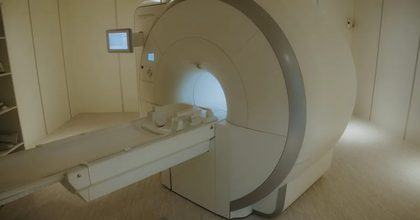 |
| s0299-b06 ALL_BAD · other |
En la madrugada del sábado 16 de mayo de 2009, Hattie Gertrude Brown desapareció tras recoger a su sobrino en una gasolinera del condado de Halifax, Virginia. Dos meses después, su auto apareció calcinado tras un granero abandonado. Han pasado 17 años y, pese a las extensas búsquedas, ni un solo rastro de Hattie ha sido encontrado. | GENERICSTOCK_VIDEO fallback=literal score=0.337523 |
pixabay UNKNOWN |
{'legacy': 0.3, 'semantic_text': 0.3, 'semantic_visual': None} | 0.3 The image shows a rural field but lacks the specific subjects of a barn and car remains. |
null | 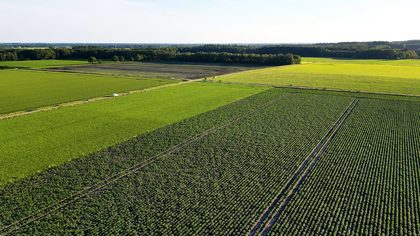 |
| s0400-b01 ALL_BAD · space_science |
Los artesanos aplicaron cada detalle con precisión ritual. Sobre la frente, una hilera de serpientes uraeus con discos solares se alza como guardianas de fuego, símbolo de la realeza divina que todo difunto aspiraba a poseer en el otro mundo. A los lados de la peluca, dos chacales recostados vigilan los extremos: son Anubis, el dios embalsamador, que custodia el umbral entre la vida y la muerte. En la parte superior, un escarabajo azul de alas doradas extiende su vuelo sobre la cabeza, emblema del sol naciente y del renacimiento eterno. No hay espacio para el azar: cada elemento fue elegido para asegurar la supervivencia del alma. | HISTORYARCHIVAL_IMAGE fallback=literal score=0.3085 |
wikimedia_commons CC BY-SA 4.0 SpeakingArch |
{'legacy': 0.3, 'semantic_text': None, 'semantic_visual': None} | 0.85 The mask is clearly the subject and set in a museum-like environment, with some implied detail revealing. |
null | 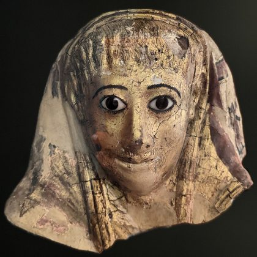 |
| s1008-b12 ALL_BAD · technology |
Sin embargo, la introducción de tecnologías avanzadas provenientes de estas inteligencias también plantea un dilema ético considerable. La energía libre, que algunos creen que podría provenir de los sistemas de propulsión de los OVNIs, podría ser la clave para erradicar la pobreza y el daño ambiental. No obstante, en lugar de ser utilizada para el beneficio universal, la historia nos enseña que tales avances a menudo se convierten en herramientas de destrucción. La ciencia, cuando se convierte en un instrumento de poder, perpetúa ciclos de conflicto y desigualdad, lo que exige una transformación espiritual y social radical para evitar un futuro sombrío. | ABSTRACTSTOCK_IMAGE fallback=literal score=0.205486 |
pixabay_photo UNKNOWN |
{'legacy': 0.3, 'semantic_text': None, 'semantic_visual': 0.3} | 0.3 The image suggests advanced technology through light bulbs but lacks clear action and context. |
null | |
| s0386-b04 ALL_BAD · action |
La policía también buscó a un segundo hombre: varios testigos lo vieron corriendo a toda velocidad entre las colinas de Exwick entre las cinco y las siete de la tarde del crimen. Nunca se presentó a declarar, y su figura se perdió en la niebla del recuerdo. ¿Era el asesino huyendo? ¿O un testigo aterrado que prefirió no involucrarse? Lo cierto es que, sin su testimonio, la cadena de eventos se rompió. El caso Bushell se convirtió en un archivo polvoriento, revisitado cada cierto tiempo por detectives que se negaban a rendirse, pero que chocaban una y otra vez contra el muro de la falta de respuestas. | PEOPLESTOCK_VIDEO fallback=literal score=0.445003 |
pexels UNKNOWN |
{'legacy': 0.3, 'semantic_text': 0.3, 'semantic_visual': 0.3} | 0.3 The silhouette of a man is present, but there is no action of running and the environment does not clearly depict a fog-covered hill. |
null | |
| s1471-b23 ALL_BAD · animals |
El legado de Josephine Myrtle Corbin sigue vivo en un lugar inesperado. Su esqueleto, donado en 1928, se conserva en la Facultad de Medicina de la Universidad de Tennessee. Allí, los estudiantes de tercer año lo estudian para aprender anatomía de duplicación pélvica, una condición que la medicina del siglo XIX apenas podía describir. Lo que para Myrtle fue una vida de exhibición, para la ciencia actual es una herramienta de formación concreta. | HISTORYARCHIVAL_IMAGE fallback=literal score=0.28009 |
wikimedia_commons Public domain Unknown author Unknown author |
{'legacy': 0.3, 'semantic_text': None, 'semantic_visual': 0.3} | 0.0 The image depicts swimmers, which is unrelated to medical students or anatomy. |
null | |
| s0517-b23 ALL_BAD · city |
El cuerpo del delito es también un organismo que clama por ser interpretado. En el interior de esa sucursal bancaria, los investigadores se enfrentaron a una autopsia del espacio: cada herida de bala, cada mancha hemática, cada cartucho percutido era un signo clínico en el cadáver de la escena. El reloj biológico de la investigación se detuvo temprano: a la 1:30 p.m., la alarma silente disparó un estímulo nervioso hacia el sistema policial, pero cuando los primeros respondedores arribaron once minutos después, ya se había producido un fallo multiorgánico. Tres corazones habían cesado su función. La fisiología de la paz cotidiana colapsó en ese modesto edificio, cuyo aspecto de tráiler portátil no admitía la posibilidad de un trauma tan masivo. Sylvia Holtzclaw, de 52 años, cuyo cuerpo fue hallado junto a los Barnes en un pequeño armario de servicio, había recibido el impacto de una .40 Glock, un proyectil diseñado para causar la máxima disrupción tisular. En el lenguaje de la patología forense, las trayectorias balísticas narraban una coreografía violenta que se resolvió en segundos. La ausencia del casete de seguridad VHS representó una lobectomía deliberada: los criminales extirparon el lóbulo temporal de la memoria, aquel fragmento de cinta magnética que hubiera podido registrar el electroencefalograma del atraco. Sin esa pieza, el diagnóstico quedó incompleto, y el caso entró en un estado de coma inducido por la falta de evidencia. | CITYARCHIVAL_IMAGE fallback=literal score=0.256976 |
wikimedia_commons CC BY-SA 4.0 DAIMANdald |
{'legacy': 0.0, 'semantic_text': 0.0, 'semantic_visual': 0.0} | 0.0 The image does not depict a bank branch interior or any relevant action. |
null | 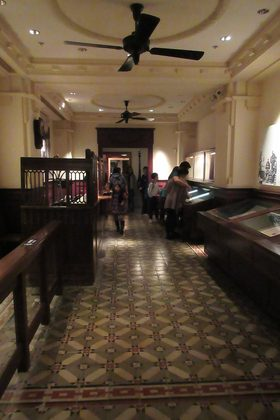 |
| s0457-b16 ALL_BAD · desert_geology |
El campeonato nacional, entonces, no era solo un partido. Era la culminación de una temporada que había puesto a prueba la salud, la disciplina y la voluntad de cada jugador. El Hard Rock Stadium, vacío de aficionados, se convirtió en un escenario de silencio tenso, solo roto por el golpe de los cascos y los gritos de los entrenadores. Alabama llegó con la misión de demostrar que, incluso en medio del caos, la excelencia podía florecer. Ohio State, por su parte, llegaba con la esperanza de detener a una máquina perfecta. Lo que nadie sabía era que esa noche se escribiría una historia que trascendería el marcador. | ABSTRACTSTOCK_VIDEO fallback=literal score=0.300012 |
pexels UNKNOWN |
{'legacy': 0.0, 'semantic_text': 0.0, 'semantic_visual': 0.0} | 0.0 The image depicts a soccer stadium, not an American football stadium. |
null | |
| s1373-b14 ALL_BAD · history |
En 2023, un estudio de la Universidad de Stanford analizó el ADN de los antiguos peruanos de Paracas y encontró marcadores genéticos que no coinciden con ninguna población actual. Ese hallazgo, publicado en revistas científicas, sugiere migraciones desconocidas y pone en entredicho todo lo que creíamos saber sobre el poblamiento de América. No es un caso aislado: en la Isla de Pascua, la datación por radiocarbono de 2011 estableció que fue habitada por primera vez alrededor del año 1200 d.C., y que la construcción de los moái cesó abruptamente hacia 1500 d.C., coincidiendo con un colapso ecológico y social. Ambos enigmas comparten un patrón: la ciencia moderna aún no puede explicarlos del todo, y su estudio continúa revelando que la historia humana es más compleja y misteriosa de lo que los libros de texto admiten. | HISTORYSTOCK_VIDEO fallback=literal score=0.230093 |
pixabay UNKNOWN |
{'legacy': 0.0, 'semantic_text': 0.3, 'semantic_visual': 0.3} | 0.3 The image shows ancient ruins but does not depict scientists or the specific actions described. |
null | 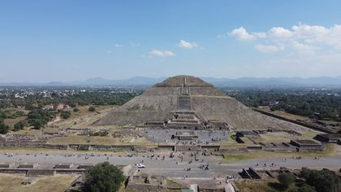 |
| s0203-b16 CONTROL · space_science |
Este enfoque científico ha revitalizado el interés en el tema, señalando que los encuentros pueden ofrecer pistas sobre la existencia de vida más allá de nuestro planeta. | SPACESCIENTIFIC_IMAGE fallback=literal score=0.504946 |
wikimedia_commons CC BY 4.0 ESO/ J. Girard ( djulik.com ) |
{'legacy': 1.0, 'semantic_text': 1.0, 'semantic_visual': 1.0} | 0.3 The image shows a starry sky but lacks an astronomer and telescope. |
null | 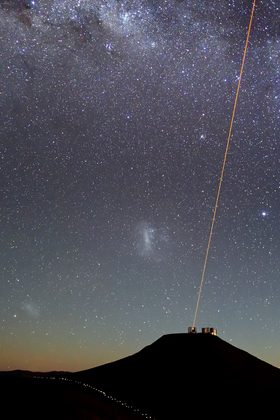 |
| s0826-b40 CONTROL · technology |
Lo que resulta verdaderamente asombroso es cómo una leyenda de casi dos siglos logró adaptarse a la era de las pantallas táctiles y las aplicaciones de mensajería. En una época en la que la información viaja a la velocidad de la luz, el Amabie se convirtió en un símbolo de resiliencia cultural: no era una superstición, sino un recordatorio de que la humanidad ya había enfrentado plagas antes, y que siempre encontró la manera de sobrevivir, incluso con humor y creatividad. Las ilustraciones virales no solo buscaban protección mística; también eran una forma de decir 'esto también pasará', un mensaje de esperanza que trascendía las barreras del idioma y del tiempo. | ABSTRACTSTOCK_VIDEO fallback=literal score=0.38441 |
pexels UNKNOWN |
{'legacy': 0.85, 'semantic_text': 0.85, 'semantic_visual': 0.85} | 0.85 The image clearly shows hands holding a smartphone while scrolling, fitting the modern context. |
null | |
| s0767-b04 CONTROL · nature |
Para entender por qué tu cerebro decide convertir una noche tranquila en una película de terror, tenemos que mirar dentro de la máquina más compleja que existe. Las pesadillas no son accidentes ni caprichos de la mente: tienen una base neurobiológica sólida. Ocurren, casi siempre, durante la fase REM del sueño, ese período en el que tus ojos se mueven rápidamente bajo los párpados y tu actividad cerebral se dispara. Según la National Sleep Foundation, esta fase ocupa aproximadamente el 20 al 25 por ciento del sueño total en un adulto, y es justo ahí, en esa ventana de tiempo, donde tu amígdala —el centro de procesamiento de emociones— se enciende como una alarma. | ABSTRACTSTOCK_VIDEO fallback=literal score=0.292937 |
pixabay UNKNOWN |
{'legacy': 0.85, 'semantic_text': 0.85, 'semantic_visual': 0.85} | 0.3 The image features abstract lines that could suggest movement but does not clearly represent brain neurons or firing actions. |
null | |
| s1073-b14 CONTROL · people |
En el próximo capítulo, nos adentraremos en los testimonios de aquellos que viven con trastornos neurológicos, ofreciendo una perspectiva íntima que va más allá de la estadística, conectando las experiencias personales con los desafíos médicos actuales. | PEOPLESTOCK_VIDEO fallback=literal score=0.277334 |
pexels UNKNOWN |
{'legacy': 1.0, 'semantic_text': 0.85, 'semantic_visual': 0.85} | 1.0 The image depicts a group of people in a cozy setting, clearly engaged in sharing personal stories. |
null | 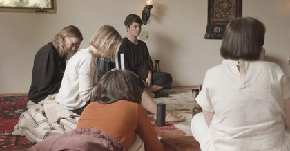 |
| s1670-b13 CONTROL · medical |
Lo que siguió a ese diagnóstico es, quizá, la parte más luminosa de esta historia. El caso de María fue publicado en 2021 en la Revista Mexicana de Neurociencia, y los registros indican que ese artículo motivó la creación de un protocolo de diagnóstico temprano en el instituto donde fue tratada: ahora, todo paciente menor de 50 años con migrañas atípicas, lesiones en la sustancia blanca y antecedentes familiares de demencia precoz entra en una ruta de evaluación genética que antes no existía. En palabras del equipo tratante, el caso dejó de ser un misterio individual para convertirse en una herramienta de detección para otros. | HISTORYSTOCK_VIDEO fallback=literal score=0.293021 |
pixabay UNKNOWN |
{'legacy': 0.6, 'semantic_text': 0.6, 'semantic_visual': 0.6} | 0.6 The image shows a group of people in a meeting room, but the subjects and actions are not clearly defined. |
null |